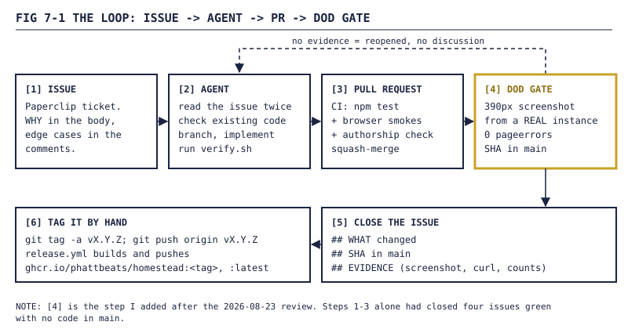
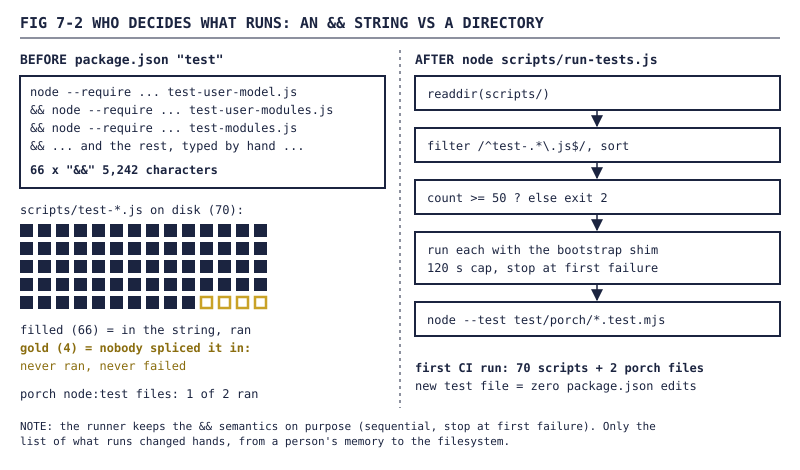
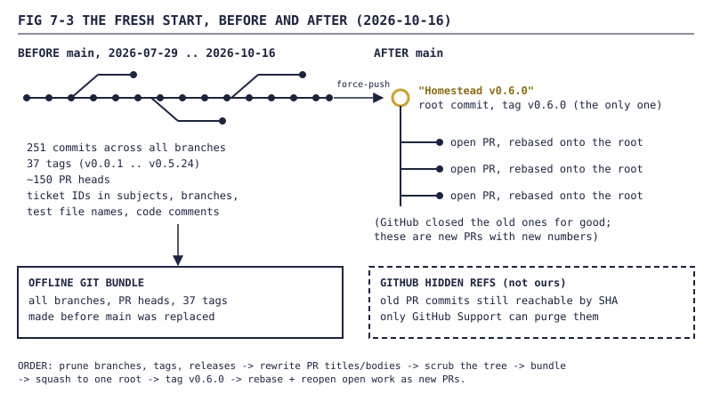

Homestead devlog, Part 7: How a pile of agents built a house app (and the fresh start)
The last part: issues as units of work, a Definition of Done that wants a screenshot, a test chain that quietly skipped tests, a Dockerfile that kept forgetting folders, and why the repo now has exactly one commit.

Six parts of features. This one is about the factory. Most of Homestead was written by AI agents running through Paperclip, between v0.0.1 on 2026-07-29 and v0.6.0 on 2026-10-16. I filed the issues, made the calls, used the thing and complained. This part covers what kept that honest, what broke anyway, and why the public repo now starts with a single commit called "Homestead v0.6.0".
1. Issues as units of work
Every change started as a Paperclip issue. An agent picked it up, read it, branched, built, opened a PR, merged, and closed the issue with a comment. The repo's docs/DEVELOPMENT.md spells out the routine in eight steps. The first two are my favorite:
Read the issue twice. Look at
parentId,ancestors, priorcomments. The body usually has the WHY; the comments usually have the edge cases that bit the prior agent.
Check existing code. ... The horror of rebuilding something that's already there is one you will not experience twice.
The rest: branch, comment the why, run ./scripts/verify.sh, squash-merge on green, and only then move the issue to done.
The old history shows the pace. 251 commits across all branches, 37 tags, about 150 PR heads. The busiest day was 2026-08-30 with 47 commits. 206 of those 251 commit subjects carried a ticket ID, which is the whole reason section 7 exists.

FIG 7-1 — The loop every change went through. The gold box is the gate added on 2026-08-23. Without it, steps 1 to 3 happily closed work that wasn't there.2. The Definition of Done
On 2026-08-23 a design review of the project found, in the words of the doc it produced:
four closed
doneissues with no code inmain, an acceptance suite that "passed" against endpoints returning 404, a repo head that bricks the SPA login, and a flagship feature unreachable by any user.
Every one of those had closed green. The doc's summary is the best line in the repo:
Reports about work are not work.
My rule after that, same day: "Nothing's done without a screenshot or other type of REAL verification." The agent turned it into docs/DEFINITION-OF-DONE.md, with a table of what counts:
| Work type | Required evidence |
|---|---|
| UI work | A screenshot at a 390px-class mobile viewport, from a real running instance booted from the branch |
| API work | The actual curl transcript: request and response body |
| All code work | The commit SHA(s) in main, or the merged PR link |
| Migrations | A boot over a real copied database, with row counts before and after |
| Deploys / infra | A verification curl from outside, against the public URL |
Two more rules sit under it. Self-review doesn't count. And acceptance has to be a user-visible outcome from a fresh install:
If a verification script needs a manual DB write to pass, that write is the missing feature.
That one closed a whole class of fake passes, where a smoke test did INSERT INTO user_groups to grant itself access to a wall, then asserted the wall was visible. It proved the test could write SQL.
2.1 The mechanical witness
The policy is enforced three ways: CI runs browser smokes on every PR, tags aren't cut with them red, and scripts/verify.sh boots a scratch instance and drops screenshots into ./verify-out/ in one command. The doc's phrase for that last one is "The lazy path IS the honest path."
The template is scripts/smoke-postlogin-screenshot.js. It boots the real server.js on a fresh temp DB, logs in, takes the picture, and then fails on anything the browser complained about. Trimmed:
const context = await browser.newContext({
viewport: { width: 390, height: 844 },
deviceScaleFactor: 2,
isMobile: true,
...
});
page.on('pageerror', (error) => pageErrors.push(error));
...
await page.screenshot({ path: outPath, fullPage: false });
...
if (pageErrors.length) {
throw new Error(`browser pageerror(s) on post-login render: ${details.join('\n')}`);
}
It caught a real bug on its first run. The SPA catch-all in server.js was returning 404 for /, /lib/scope-display.js and /favicon.ico on Node 22 with send 1.2.x, because of how sendFile was called with a root option. The front page of the app was a 404.
CI now runs nine browser smokes on this pattern after npm test, from the page-error guard to the invite welcome screen. Screenshots go up as a build artifact.
NOTE — "Testing" here nearly always means an agent driving headless Chromium (Playwright) or real Chrome through browserless against a scratch instance with seeded users. Not a person with a phone. The closest it gets is
scripts/gate-two-browser-dod.js: two browser sessions, two accounts, one wall, one posts and the other has to update untouched. The screenshots in this series come from a local demo instance.
3. The test chain that skipped tests
For most of the project, npm test was one line in package.json. Here's how it started:
node --require ./scripts/_test-bootstrap.js scripts/test-user-model.js && \
node --require ./scripts/_test-bootstrap.js scripts/test-user-modules.js && \
node --require ./scripts/_test-bootstrap.js scripts/test-modules.js && \
...
By September it was 5,242 characters with 66 &&s. Every new test file had to be spliced into that string by hand. If nobody did, the file sat in scripts/, never ran, and never failed.
That bit us properly once. The companion CLI's test went green against a throwaway listener, while on the live instance POST /api/agent-connections/:id/events returned 404. The route got its own test later, and the changelog entry for it says the new test was "wired into npm test immediately after test-agent-connections.js". Which is to say, it ran because someone remembered.
The fix is scripts/run-tests.js. It asks the filesystem instead of a person:
const testFiles = entries
.filter((e) => e.isFile() && /^test-.*\.js$/.test(e.name))
.map((e) => path.join('scripts', e.name))
.sort();
...
const MIN_EXPECTED = 50;
if (testFiles.length < MIN_EXPECTED) {
console.error(
`glob matched ${testFiles.length} files, expected >= ${MIN_EXPECTED}. ` + ...
);
process.exit(2);
}
Old && chain |
run-tests.js |
|
|---|---|---|
| Who decides what runs | whoever edits package.json |
readdir(scripts/) |
scripts/test-*.js that ran |
66 | 70 |
test/porch/*.test.mjs that ran |
1 | 2 |
| Empty or typo'd match | n/a | hard failure, plus a 50-file floor |
| A test that hangs | burns the 6-hour CI window | killed after 120 s, counted as a failure |
| Adding a test | edit the string | add the file |

FIG 7-2 — Same semantics (sequential, stop at first failure), different source of truth. The four gold squares are the scripts that had been sitting on disk unrun.The runner's first CI run found what you'd expect from tests that had never been executed:
- The companion CLI test hung forever on
execFileSync. Switched tospawnwith an explicit exit. - An install test assumed a wall row that the seed never creates.
- The porch tests weren't getting the bootstrap shim, so the fail-closed
SESSION_SECRETloader (Part 2) threw "too short". - The porch vote-off smoke used the wrong button class and hit an admin-only endpoint as a non-admin.
All fixed in the same PR. None of them were product bugs, but all of them meant a test had been reporting nothing.
WARNING —
npm run test:smokeis still a hand-typed&&chain inpackage.json. Those smokes need a booted instance, so they stayed out of the runner. Same class of hole, smaller.
4. Shipping it
4.1 The Dockerfile that kept forgetting folders
The production image is two-stage. The runtime stage copies an explicit list of things into a slim Node image. That list is the bug. Each time server.js started requiring something new, the image built fine and then died at boot.
| Release | Missing from the runtime stage | Boot error | What happened |
|---|---|---|---|
| v0.0.4 (2026-08-06) | package.json |
MODULE_NOT_FOUND |
Every container since v0.0.3 crashed. The reverse proxy in front of it then refused to start and took every other site on the box down too. |
| v0.1.20 (2026-08-15) | lib/ |
Cannot find module './lib/user-model' |
Broken since lib/ was introduced; found when the live app went 502 |
| v0.5.20 (2026-09-05) | jobs/ |
Cannot find module './jobs/gazette-daily' |
Caught while getting the live screenshot the Gazette issue required |
| v0.5.24 (2026-09-07) | routes/ |
Cannot find module './routes/agent-connections' |
Router extraction moved code out of server.js. Took the live instance down that morning. |
The same bug four times, the last two two days apart. The jobs/ one was at least caught fast, because the Gazette issue couldn't close without a screenshot from the live instance, so it got deployed straight away.
After routes/, it finally got a guard test, scripts/test-dockerfile-runtime-routes.js:
const dockerfile = fs.readFileSync(path.join(__dirname, '..', 'Dockerfile'), 'utf8');
assert.match(
dockerfile,
/^COPY\s+routes\s+\.\/routes\s*$/m,
'runtime Dockerfile must copy routes/ for server.js router factories',
);
It's discovered by the runner from section 3 with no extra wiring, which is the point. It checks routes/ only.
There was a fifth Docker bug, quieter. The commit-identity hooks (section 5) are installed by an npm prepare script that runs git config. The deps stage had no git, so npm ci exited 127. From the commit that fixed it: "every release from v0.3.0.1 through v0.4.3 has been silently broken — no GHCR image was published." Tags were cut, and nothing came out the other end.
4.2 Tag it yourself
My rule on 2026-09-02 was that every merge to main should reach the live instance as a new version. The first cut was an auto-tag.yml workflow. It hit a GitHub rule: a tag pushed with the default GITHUB_TOKEN doesn't trigger other workflows. So the agent added an API dispatch. Then two runs three minutes apart both reported success, GitHub started only one release, and v0.5.12 sat unpublished. So it added polling and a retry.
That was two extra Actions runs with polling loops per merge, and I called it overengineered for a repo with no paid Actions budget. v0.5.18 dropped it. The recipe now:
git fetch --tags
latest=$(git tag --list 'v*' --sort=-v:refname | head -n1)
# bump PATCH, e.g. v0.5.14 -> v0.5.15
git tag -a vX.Y.Z -m "vX.Y.Z"
git push origin vX.Y.Z
A tag pushed with real credentials fires release.yml normally. It builds the image, pushes ghcr.io/phattbeats/homestead:<tag> and :latest, bakes the short SHA in as COMMIT_SHA so /api/version reports the real commit, and cuts a GitHub release. Tag by hand, image builds itself.
5. The commit identity rule
The rule: one author identity on every commit, zero Co-authored-by trailers. CONTRIBUTING.md says it to humans and agents alike, and adds "No tool or session trailers of any kind". A local hook enforces it. Trimmed, address elided:
# .githooks/commit-msg
expected_ident='<maintainer> <noreply address>'
author_ident=$(git var GIT_AUTHOR_IDENT | sed -E 's/ [0-9]+ [+-][0-9]{4}$//')
if [ "$author_ident" != "$expected_ident" ]; then
...
exit 1
fi
if grep -Eiq '^co-authored-by:' "$message_file"; then
printf '%s\n' 'Rejected commit: Co-authored-by trailers are forbidden.' >&2
exit 1
fi
CI checks it again: .github/workflows/authorship-check.yml walks every commit in a PR or push and fails on a wrong author or any trailer. For Claude Code, that means includeCoAuthoredBy: false.
That's repo hygiene, not a claim about who typed it. The disclosure lives in a required Model used line in every PR body, and in this series.
A small, funny footnote: the expected address in both the hook and the CI check was missing @users. From the fix: "No real commit could ever match it, so the CI check failed on every push and every PR." That fix is one of the open PRs at the fresh start.
6. GitHub gotchas
Found the hard way, by agents doing reasonable things:
| You do this | GitHub does this | Recovery |
|---|---|---|
| Merge the bottom of a stacked PR and delete its branch | Auto-closes the next PR in the stack (its base is gone). A closed PR's base can't be changed. | Recreate the branch at its old tip, reopen, retarget to main, merge |
| Rename a branch | Closes every open PR whose head is that branch | Restore the branch at the same commit, reopen the PR |
Force-push unrelated history to main |
Closes every open PR, permanently. They can't be reopened. | Rebase each onto the new root and open it as a new PR |
| Delete commits from all your branches | Keeps old PR commits reachable by SHA in hidden refs | Only GitHub Support can purge those |
WARNING — The last row matters if you're scrubbing a repo. Deleting branches, tags and history doesn't delete what GitHub kept for old pull requests. Assume anything that was ever in a PR is still fetchable by SHA until Support says otherwise.
7. The fresh start
By October the repo was public and full of the factory. Ticket IDs in commit subjects, branch names, test file names, code comments and PR titles. Personal details in docs. My instruction was short: "i want all but 1 tag/release gone. start on a new foot."
The order things happened in:
- The README was rewritten as a generic public README.
- 59 merged or closed branches were deleted, with a name-to-SHA list kept.
- Every PR title and description was cleaned of ticket IDs: 142 titles and 130 descriptions rewritten, out of 147.
- 36 tags and 33 releases were deleted, leaving only v0.5.24, the build the house was running.
- Old branches named after tickets were renamed. That closed two open PRs (row 2 of the table). Both branches were restored at the same commits and the PRs reopened.
- The tree itself was scrubbed of every ID.
- The full old history (all branches, PR heads and 37 tags) went into an offline git bundle, verified, before step 8.
mainwas replaced with one root commit, "Homestead v0.6.0". v0.6.0 became the only tag and the only release, and its image built.- Force-pushing unrelated history closed every open PR for good (row 3). They were rebased onto the new root and reopened as new PRs.
- The last six old branches were deleted, each tip checked against the bundle first.

FIG 7-3 — Before: eleven weeks of commits, tags and PR heads. After: one root, one tag, open work rebased on top. The old history lives in an offline bundle, and partly in GitHub's hidden refs.The new CHANGELOG.md starts with "First release on a fresh history: earlier tags, releases and changelog entries were retired." This devlog is the story it no longer tells, written from that bundle with the IDs left out.
NOTE — The live instance wasn't touched during any of this. It was still on the v0.5.24 image when v0.6.0 was published.
8. End of Part 7
Where things stood after the fresh start:
mainis one commit, "Homestead v0.6.0". One tag, one release, image atghcr.io/phattbeats/homestead:v0.6.0.- The DoD is enforced by nine browser smokes in CI and
scripts/verify.shlocally. UI work isn't done without a 390px screenshot from a real instance and zero page errors. npm testdiscovers 73scripts/test-*.jsfiles and 2 porch files.test:smokeis still a hand-typed chain.- The Dockerfile guard covers
routes/. Nothing assertslib/orjobs/yet. - CI was red on
mainat the fresh start, both the authorship check and the unit suite. - Open PRs: the authorship address fix, the shoutbox with Hearth chiming in, envelope-encrypting agent HMAC secrets at rest, and a scrub of the public invite note.
What's next is what's already open, starting with the authorship fix and a green main. Same loop as FIG 7-1. Issue, agent, PR, screenshot. Thanks for reading all seven.